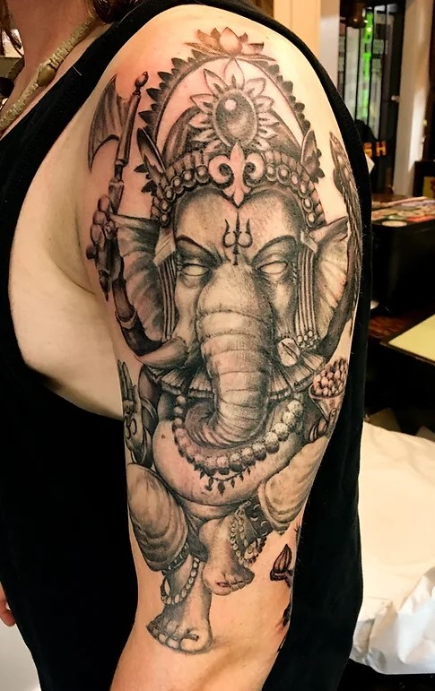
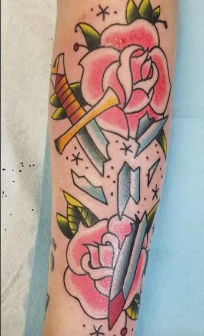
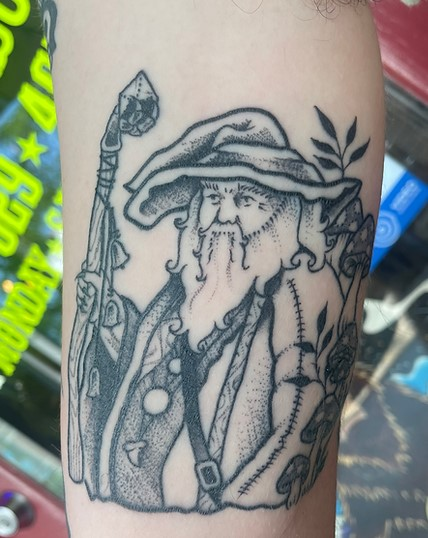

Black and grey tattoo artistry is a style that uses only black ink and shades of grey to create stunning monochromatic designs. This technique is characterized by the intricate use of shadows and highlights to create depth and dimensionality. Black and grey tattoos typically have a softer, more subtle appearance than full-color tattoos, but they can be just as visually striking. This style of tattooing has a long history, originating in prisons and gang culture but gradually becoming a popular choice for mainstream tattoo enthusiasts. Black and grey tattoo artistry requires a high level of skill and expertise due to the technical nature of the shading process. Artists must be able to manipulate light and shadow to produce realistic depictions of everything from portraits to landscapes and abstract designs. The process is time-consuming, as shading must be done gradually and carefully to ensure a smooth transition between dark and light areas. Many artists who specialize in black and grey tattooing have become well-known for their photorealistic designs, which can be incredibly detailed and intricate. Overall, black and grey tattoo artistry is a highly specialized form of tattooing that requires a great deal of skill, precision, and artistry to master.
American Traditional tattoo artistry is a style that dates back to the early 1900s. The style is characterized by bold lines, vibrant colors, and classic designs. The art form has its roots in sailors' tattoos, with its most popular motifs being anchors, ships, roses, and eagles. American Traditional tattoo art experienced a gradual decline in popularity following the rise of other tattoo styles such as Japanese and Blackwork. However, in recent years, the art form has experienced a resurgence. This renewed interest in American Traditional tattoo artistry can be attributed to its timeless appeal, affordability, and the skill of modern-day tattoo artists who have continued to innovate and enhance the traditional style. Thanks to popular media, American Traditional tattoo artistry has garnered a dedicated following, with more people seeking tattoos done in this traditional style. Notably, tattoo conventions across the USA feature American Traditional tattoos prominently. Its ability to stand the test of time is one of the reasons why the style is enduring, but the other aspect is its simplistic beauty. American Traditional tattoo artistry's designs are straightforward and expertly crafted, which is why people gravitate towards it. This style has become an embodiment of the American traditional culture, and its popularity continues to grow among tattoo enthusiasts. The art form remains an essential part of the tattooing world, and with its growing acclaim, it is indeed an exciting time for the American Traditional tattoo artistry scene.
Fine line tattoo artistry is a technique that requires a great deal of skill and precision. It involves using a single needle to create intricate designs that appear delicate, clean, and minimalistic. The result is stunning and can range from a simple flower to a larger portrait, as long as the design is composed of ultra-thin lines. This style of tattooing has become increasingly more popular in recent years, and the quality of the fine line tattoo artists has elevated as well, as they develop their techniques further to create more intricate and purposeful designs. The objective of fine line tattooing is to create a masterpiece that is composed of thin, precise lines that will stand the test of time. In terms of ink, fine line tattoos typically use black ink, although there are artists that use a limited color palette to accent a design. Due to the amount of detail and precision that goes into the creation of a fine line tattoo, the process can take longer than a traditional tattoo, but the end result is often worth the extra effort. The fine line technique is very different from traditional tattoo artistry and requires the artist to have a deep understanding of the delicate and intricate nature of thin lines. As such, it's important to find an experienced and skilled tattoo artist who can help bring your vision to life. Fine line tattoos are versatile and can be adapted to create different styles depending on the subject matter, providing a unique and stunning form of expression.
